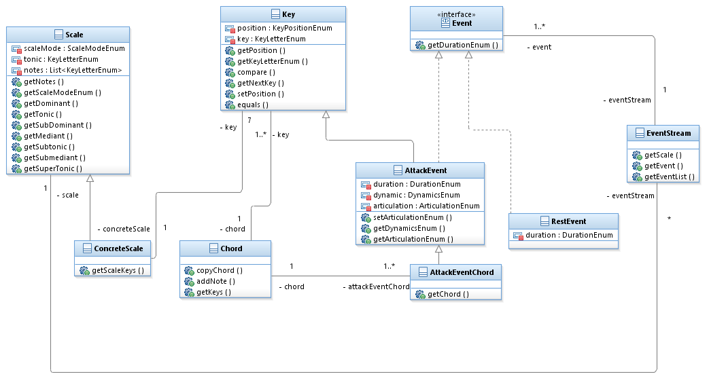

The Elements package contains classes that encapsulate different elements of musical phrase.
Here is a class diagram representing the structure of the package:
The Event interface is implemented by classes which represent 'events' as articulated within GTTM theory. It provides an interface for a method 'getDurationEnum()' which returns the durational length of the event. The durational length is measured in the lowest level of beats in the metrical structure.
The AttackEvent class implements the Event interface and is used to represent the instantiation of a pitch as well as encapsulating the durational value of the pitch.
The RestEvent class implements the Event interface and is used to represent the instantiation of a period of rest within the music, and further encapsulates the duration of that rest.
The EventStream class is used to encapsulate a stream of Event objects. It is used to represent a piece of music.
The AttackEventChord class extends the AttackEvent class to encapsulate the instantiation of a chord of pitches, as well as its duration.
The KeyLetterEnum enum-type class is used to constrain the range of letters that can be associated with a Key class object. It is used to represent keys within the Western tonal tradition.
The KeyPositionEnum enum-type class is used to constrain the range of positions available for use in the music generator. It matches the position available on a keyboard and ranges from 1-8.
The Key class is used to encapsulate details about a pitch at the point of instantiation. It defines the pitch frequency using KeyLetterEnum and KeyPositionEnum enum-type classes.
The Scale class is used to encapsulate a Western tonal tradition type scale. It defines a scale as a sequence of KeyLetterEnums
The ConcreteScale class is used to encapsulate a Western tonal tradition type scale, and includes definite pitch positions for members of the scale. It defines a scale as a sequence of Key objects
An enum-type that is used to describe different dynamic values for AttackEvent objects.
An enum-type that is used to describe different articulation values for AttackEvent objects.